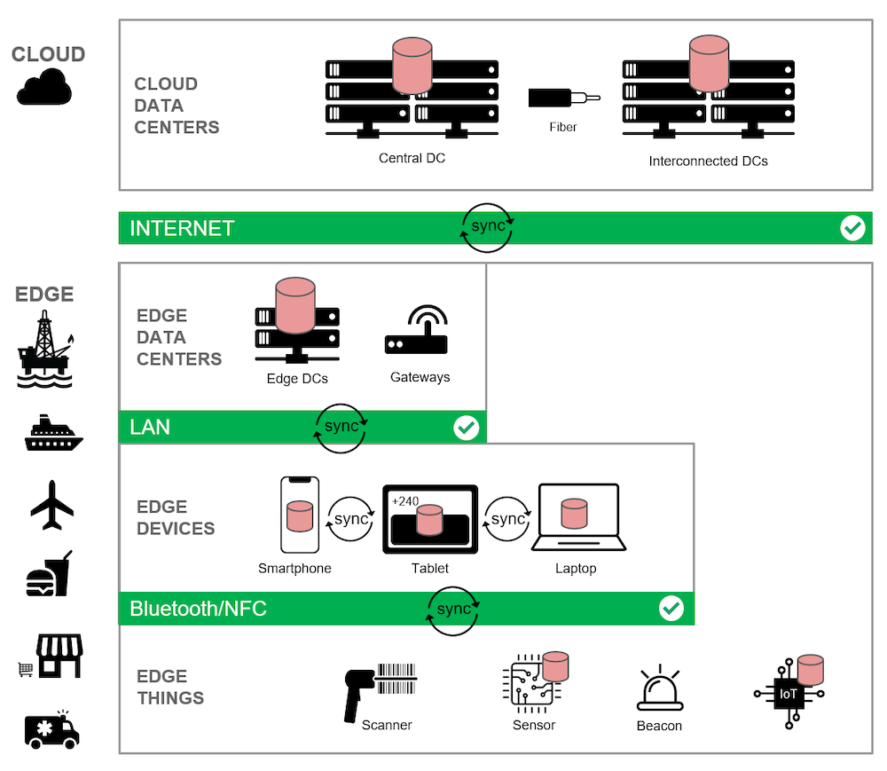

Edge Computing and Databases
All edge computing architectures have an important requirement: using the right kind of database.
If you’re building an edge architecture, you need to use a database that:
Runs in all layers
Distributes its data footprint across all layers
Synchronizes data changes instantly across all layers
In essence, you need to create a synchronous fabric of data processing that spans the entire architecture: from the cloud through the edge to the device.
Let’s take a closer look at our architecture diagram from earlier:

In this version of the edge computing architecture, I’ve added red database icons to emphasize where data
is stored and processed.
In the cloud layer, you see a database server installed in the central data center, as well as the
interconnected data centers across cloud regions.
Then in the edge layer, a database server is installed in the edge data center.
Finally, a database is embedded directly to select edge mobile and IoT devices, allowing them to keep
processing, even in the event of total network failure.
But edge computing is much more than simply installing a database at every level. The databases must
e able to work together in tandem as a cohesive whole, replicating and synchronizing data captured at
the edge across the rest of the environment to guarantee that data is always available and never lost
or corrupted.
As such, in the diagram you also see data being synchronized:
Between cloud and edge database servers
Between embedded databases on devices and database servers at the edge or in the cloud
Between the embedded databases on devices and things, using private area networks
By spreading data processing across every layer of your architecture, you achieve greater speed, resilience,
security and bandwidth efficiency.
If the internet connection to the cloud data center slows or stops, applications process data in the edge
data centers instead, completely unaffected and highly responsive. And if the cloud data center and edge
data center become unavailable, apps with embedded databases continue to run as intended and in real
time by processing and syncing data directly on and between devices. And if the catastrophic happens
and all network layers become unavailable, edge devices with embedded data processing serve as their own
micro data centers, running in isolation with 100% availability and real-time responsiveness until
connectivity is restored.
Another big benefit of the edge computing model is robust support for data privacy and security. These
considerations are critical for applications that handle sensitive data, such as in healthcare or finance.
A key value point for edge computing is that sensitive data never has to leave the edge.
With an edge computing architecture, users and devices always have speedy access to data, even in the event of
internet latency or outage. And your database plays a pivotal role in making it all happen.